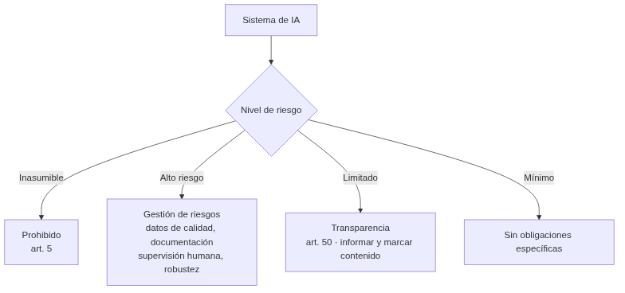
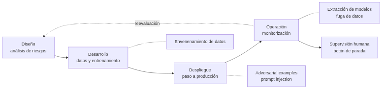
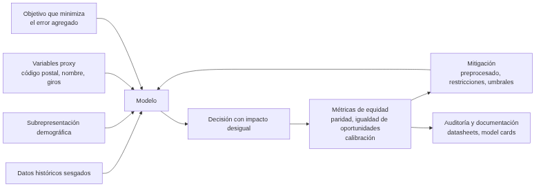

UD06 — Aplicación de principios legales y éticos de la IA¶
Unidad 6 · 6 h · semanas 24-28 (15 de marzo al 23 de abril)
Última unidad de contenidos del módulo. Ocupa el tramo más fragmentado del curso (Fallas y Pascua) porque es la que menos carga de laboratorio tiene. Se evalúa con dos debates por roles y la prueba escrita del RA6.
1. Introducción¶
A lo largo del curso has aprendido a construir sistemas de IA: caracterizarlos (UD01), elegir modelos y resolver problemas (UD02), aplicar sistemas expertos (UD05), procesar lenguaje (UD03) y analizar sistemas robotizados (UD04). Pero un profesional de la IA no solo sabe cómo se construye un sistema: sabe qué puede hacer, qué no debe hacer y cómo proteger a las personas y al propio sistema.
Dicho de otro modo: en cualquier disciplina técnica hay que distinguir entre lo que se puede desarrollar y lo que es ético y legal desarrollar. Esa distinción es el contenido de esta unidad.
El Libro Blanco sobre la inteligencia artificial de la Comisión Europea (2020) resume bien las dos caras. Por un lado, la IA ha mejorado la atención sanitaria haciendo más precisos los diagnósticos, y ha traído avances en agricultura, producción y seguridad. Por otro, el mismo documento enumera sus riesgos: la opacidad en la toma de decisiones, la discriminación de género, el uso de modelos y conjuntos de datos con fines delictivos y la pérdida de privacidad.
La respuesta europea viene de la Estrategia Europea para la Inteligencia Artificial (abril de 2018), que fija una intención doble para toda la década: incentivar y financiar el desarrollo de la IA y, a la vez, regular el uso que se hace de ella. De ahí salen las Directrices éticas para una IA fiable (2019) y, finalmente, el Reglamento de IA de 2024 que estudiarás en el §6.
Hilo conductor de la unidad
La IA no es solo técnica: para desarrollarla hay que conocer sus riesgos, respetar la privacidad, cumplir la ley, proteger el sistema y garantizar que no discrimina. Cada apartado es una capa de una IA responsable, y ninguna se puede añadir al final.
Los seis bloques de la unidad se corresponden uno a uno con los seis criterios de evaluación del RA6:
- Riesgos y deontología (RA6-a): qué puede salir mal y qué obliga la ética profesional.
- Privacidad de los datos (RA6-b): cómo se protegen los datos de los que la IA aprende.
- Cumplimiento estricto de la legalidad (RA6-c): RGPD, AI Act, responsabilidad y transparencia.
- Security by design (RA6-d): proteger el sistema frente a errores y ataques.
- Privacy by design (RA6-e): privacidad desde el diseño y por defecto.
- Sesgos de género y algorítmicos (RA6-f): detectarlos y corregirlos.
2. Resultado de aprendizaje y criterios de evaluación¶
RA6 — Aplica principios legales y éticos al desarrollo de la Inteligencia Artificial integrándolos como parte del proceso.
| CE | Criterio de evaluación | Bloque |
|---|---|---|
| RA6-a | Se han argumentado los posibles riesgos legales y éticos de la aplicación de Inteligencia Artificial. | §4 |
| RA6-b | Se ha reconocido la necesidad de respetar la privacidad de los datos. | §5 |
| RA6-c | Se ha decidido el cumplimiento estricto de la legalidad en su aplicación. | §6 |
| RA6-d | Se ha integrado como parte del proceso la protección frente a previsibles errores y ataques (security by design). | §7 |
| RA6-e | Se ha comprobado que se cumplen todas las normas legales y éticas en todas las áreas de la Inteligencia Artificial (privacy by design). | §8 |
| RA6-f | Se han identificado y corregido los posibles sesgos de género en el desarrollo y aplicaciones de Inteligencia Artificial y Big Data. | §9 |
Bloque de contenidos oficial (RD 279/2021, anexo I)
El currículo llama a este bloque, textualmente, «Aplicación de principios legales y éticos de la Inteligencia Artificial», y le asigna estos contenidos:
- Deontología profesional en Inteligencia Artificial.
- Privacidad de datos.
- Protección frente a errores.
- Principios éticos.
- Sesgos de género en el desarrollo y aplicaciones de Inteligencia Artificial y Big Data.
Son cinco contenidos para seis criterios de evaluación: los CE de security by design y privacy by design (RA6-d y RA6-e) no tienen contenido propio en el anexo, y es el centro quien los desarrolla (art. 3.3 del Decreto 95/2026).
3. Objetivos de la unidad¶
| Objetivo | Al terminar la unidad serás capaz de… |
|---|---|
| O1 | Argumentar los riesgos legales y éticos de la IA apoyándote en casos reales con datos. |
| O2 | Reconocer qué obliga el RGPD y la LOPDGDD sobre los datos con los que se entrena un modelo. |
| O3 | Clasificar un sistema de IA según el nivel de riesgo del AI Act y decir qué obligaciones le tocan. |
| O4 | Integrar la protección frente a errores y ataques en el ciclo de vida del sistema. |
| O5 | Aplicar una técnica concreta de privacidad desde el diseño a un caso dado. |
| O6 | Medir el sesgo de un modelo con métricas de equidad y proponer una corrección. |
4. Riesgos y deontología de la IA (RA6-a)¶
4.1 ¿Qué puede salir mal?¶
| Riesgo | Descripción | Caso real (con dato) |
|---|---|---|
| Discriminación algorítmica | El modelo aprende y amplifica prejuicios de los datos | COMPAS (EE. UU., 2016): falsos positivos del 44,9 % en personas negras frente al 23,5 % en blancas |
| Sesgo de reclutamiento | El sistema penaliza a grupos por datos históricos | Amazon (2018): penalizaba currículos con «women's chess club captain»; el proyecto se canceló |
| Reconocimiento facial desigual | Mayor error en ciertos grupos demográficos | Gender Shades (MIT, 2018): error superior a 1 de cada 3 en mujeres de piel oscura frente a casi 0 % en hombres de piel clara |
| Errores de clasificación con daño a personas | El modelo etiqueta mal y nadie lo detecta a tiempo | Google Photos (2015): etiquetó a personas negras como gorilas |
| Fallos en sistemas críticos | El error deja de ser una molestia y mata | Uber, Tempe (Arizona), 18/03/2018: primer atropello mortal de un coche autónomo |
| Deepfakes y desinformación | Contenido falso realista | Fraude con videollamada deepfake en Hong Kong (2024): 25,6 M USD |
| Vigilancia masiva | Recogida masiva sin consentimiento | Clearview AI: más de 20.000 M de imágenes; multas en el Reino Unido (más de 7,5 M £) |
| Manipulación | Explotación de vulnerabilidades | Cambridge Analytica: 87 M de usuarios de Facebook afectados |
Tres de esos casos merecen contarse enteros, porque cada uno enseña algo distinto.
Google Photos y las etiquetas que no se arreglaron (2015)
En 2015 el ingeniero informático Jacky Alciné se dio cuenta de que el algoritmo de reconocimiento de imágenes de Google Photos había etiquetado a varios de sus amigos negros como gorilas. Google se disculpó y prometió resolverlo.
Tres años después, un reportaje de Wired comprobó que el problema seguía sin resolver: la solución de Google había sido eliminar la etiqueta «gorila» y las de otros primates. Es decir, se recortó la funcionalidad del producto porque no se sabía corregir el fallo.
Lo que enseña: un sesgo en un modelo de visión no siempre se puede arreglar, y a veces la única salida comercial es mutilar el producto. Por eso interesa detectarlo antes de desplegar.
Uber en Tempe: el primer atropello mortal de un coche autónomo (2018)
El 18 de marzo de 2018, un vehículo autónomo de Uber arrolló en Tempe (Arizona) a una mujer que cruzaba una carretera de cuatro carriles empujando una bicicleta. La investigación encontró varias causas concurrentes:
- El coche circulaba a 69 km/h.
- El sistema pudo ver a la peatona 6 segundos antes de la colisión, pero durante 4,7 segundos no hizo nada por evitarla.
- El conductor de seguridad, que debía tomar los mandos ante el riesgo, estaba distraído.
- La peatona cruzaba por una zona señalizada como prohibida para peatones, con poca visibilidad y empujando un objeto metálico, lo que pudo dificultar la detección.
Uber suspendió las pruebas y las reanudó el 20 de diciembre de 2018 alegando que sus coches ya eran más seguros que los conducidos por humanos.
Lo que enseña: en un sistema crítico el fallo nunca es de un solo componente. Aquí falló la detección, falló la reacción del software y falló la supervisión humana. Es exactamente el tipo de encadenamiento que buscan las técnicas del §7.3.
Cortana y el acento de Satya Nadella (2015)
En una conferencia de Salesforce, el consejero delegado de Microsoft Satya Nadella quiso demostrar a Cortana pidiéndole «Show me my most at-risk opportunities». Cortana entendió «Show me to buy milk at this opportunity». Se lo repitió varias veces y tuvo que reformular la frase.
La causa raíz: el reconocedor de voz estaba entrenado con inglés de acento norteamericano, y Nadella nació en la India. Lo que enseña: la subrepresentación en los datos de entrenamiento produce un producto que funciona peor para quien no se parece a esos datos — el mismo mecanismo del §9, visto desde el audio.
La brecha de responsabilidad
La opacidad algorítmica (sistemas «caja negra») dificulta asignar responsabilidades ante un error clínico o un accidente de un vehículo autónomo: ¿culpa del desarrollador, del operador, del usuario, del proveedor de datos? Esta brecha de responsabilidad es uno de los mayores retos éticos y legales de la IA, y por eso el §6.2 dedica un apartado a la responsabilidad civil.
4.2 Por qué los errores de la IA no se depuran como los del software clásico¶
Cuando se desarrolla un programa sin IA, el programador escribe el código que interacciona con el usuario, y las pruebas de software comprueban que el programa hace lo que la especificación dice. Si falla, se busca la línea culpable.
En aprendizaje automático la programación consiste en dar ejemplos de cómo debe comportarse el sistema y hacer que aprenda. No hay una línea culpable: hay un conjunto de datos, una función de pérdida y unos pesos. Por eso hace falta un proceso de prueba distinto, que verifique que con la información proporcionada el sistema ha aprendido lo correcto, y no solo que el código no se rompe.
| Software clásico | Sistema de aprendizaje automático | |
|---|---|---|
| ¿Dónde vive el comportamiento? | En el código fuente | En los datos y en los pesos aprendidos |
| ¿Qué se prueba? | Que el código cumple la especificación | Que el modelo generaliza y es justo y robusto |
| ¿Cómo se localiza un fallo? | Depuración línea a línea | Análisis del conjunto de datos y de las métricas por subgrupo |
| ¿Se puede arreglar un caso concreto? | Sí, con un parche puntual | No necesariamente: puede exigir reentrenar |
| Riesgo característico | Excepción no capturada | Sesgo sistemático que nadie mide |
Esta diferencia es la razón de ser de los tres bloques finales de la unidad: sin métricas por subgrupo (§9), sin seguridad en el ciclo de vida (§7) y sin privacidad desde el diseño (§8), un sistema de IA puede pasar todas las pruebas «de software» y seguir siendo inaceptable.
4.3 Deontología profesional¶
La deontología es la parte de la ética que trata de los deberes que rigen una actividad profesional. Todo profesional se enfrenta a dilemas morales en su trabajo, y en IA hay un conjunto que se repite desde los comienzos de la disciplina:
| Dilema clásico | En qué consiste | Matiz |
|---|---|---|
| Pérdida de puestos de trabajo | La automatización inteligente sustituye tareas, sobre todo del personal menos cualificado: credit scoring en vez de analistas, robots en almacén en vez de operarios | También genera empleos, en general más cualificados y mejor pagados. Está presente desde la máquina de vapor |
| El ser humano relegado | Si la IA reemplaza al humano en la mayoría de tareas, ¿pierde utilidad para el trabajo? | Idea de la ciencia-ficción (Toffler, Clarke); parece improbable en la práctica |
| Usos ilegales o perjudiciales | Toda tecnología puede usarse con fines ilegales, inmorales o destructivos | Evitarlo por completo es prácticamente imposible: se mitiga con regulación y control de acceso |
| Pérdida de responsabilidad individual | Un médico aplica un tratamiento por un diagnóstico erróneo del sistema: ¿culpa suya por aceptarlo, o del programador? | Y al revés: si el sistema diagnostica mejor, no usarlo podría ser negligente |
| El riesgo existencial | Un sistema que tome conciencia y decida por sí mismo podría volverse contra nosotros | Sin llegar al extremo: un error de estimación de un coche autónomo ya causa accidentes graves — que los humanos causan con mucha más frecuencia |
Frente a estos dilemas, los grandes marcos deontológicos coinciden más de lo que parece:
| Marco | Aportación |
|---|---|
| ACM Code of Ethics (2018) | El profesional debe contribuir al bien público, evitar el daño y no desplegar sistemas cuyo comportamiento no sea predecible o monitorizable |
| IEEE Ethically Aligned Design (EAD, 2019) | Pasar de una ética reactiva a una ingeniería basada en valores; estándar IEEE 7000 (consideraciones sociales desde el inicio del diseño) |
| UNESCO · Recomendación sobre la ética de la IA (2021) | Aprobada por 193 estados; 10 principios (proporcionalidad, inocuidad, justicia, transparencia, rendición de cuentas, sostenibilidad) |
| UE · Directrices éticas para una IA fiable (2019) | Una IA fiable ha de ser lícita, ética y robusta, y las tres cosas a lo largo de todo el ciclo de vida |
Principios comunes a todos ellos: beneficencia, no maleficencia, autonomía, justicia, transparencia y rendición de cuentas.
«Robusta» también en sentido social
Las Directrices de 2019 insisten en un punto fácil de pasar por alto: un sistema puede provocar daños a terceros aun teniendo buenas intenciones y funcionando bien técnicamente. De ahí que exijan robustez «técnica y social».
4.4 Principios éticos: qué se pide y por qué cuesta aplicarlo¶
La IA es una tecnología poderosa, y de ahí sale la obligación moral de promover sus efectos positivos y evitar o mitigar los negativos. Los positivos son muchos y concretos: mejores diagnósticos, predicción de fenómenos meteorológicos extremos, conducción asistida, asistencia a personas con discapacidad para ver, oír y moverse, traducción automática entre culturas, y programas como AI for Humanitarian Action de Microsoft o AI for Social Good de Google, aplicados a desastres naturales, protección de la selva tropical, vigilancia de la contaminación o prevención del suicidio.
Los negativos también son concretos. Muchas tecnologías han traído efectos secundarios no deseados —la fisión nuclear trajo Chernóbil; el motor de combustión, la contaminación y el calentamiento global—, y otras hacen daño incluso usadas como estaba previsto. En el caso de la IA, el efecto más señalado es económico: la automatización crea riqueza, pero en las condiciones actuales gran parte de esa riqueza fluye hacia los propietarios de los sistemas, lo que aumenta la desigualdad.
Desde que el Consejo de Investigación en Ingeniería y Ciencias Físicas del Reino Unido reunió en 2010 un primer conjunto de Principios de la Robótica, decenas de organismos han publicado listas parecidas. Los principios más citados son:
- Garantizar la seguridad.
- Establecer responsabilidad.
- Garantizar la equidad.
- Defender los derechos y valores humanos.
- Respetar la privacidad.
- Reflejar diversidad e inclusión.
- Promover la colaboración.
- Evitar la concentración de poder.
- Proporcionar transparencia.
- Reconocer las implicaciones legales y políticas.
- Limitar los usos nocivos de la IA.
- Contemplar las implicaciones para el empleo.
El problema de estas listas
Muchos de estos principios —«garantizar la seguridad»— valen para cualquier sistema de software, no solo para la IA. Y varios están redactados de forma tan vaga que no se pueden medir ni exigir. Mittelstadt (2019) propone la salida: que cada subcampo de la IA desarrolle pautas aplicables y precedentes concretos en vez de repetir principios generales.
Guárdate esta crítica: es el argumento más útil que puedes usar en el debate de la unidad contra quien defienda que basta con la autorregulación.
4.5 Caso de estudio · el futuro del trabajo¶
Desde la primera revolución agrícola, la tecnología ha cambiado cómo trabajamos. Aristóteles ya lo planteó en el Libro I de su Política: si la lanzadera tejiera sola, «los jefes de los trabajadores no necesitarían sirvientes». La pregunta de siempre no es si la automatización destruye empleo inmediato —lo hace—, sino si los efectos de compensación acaban devolviéndolo.
| Dato | Fuente y fecha | Qué dice |
|---|---|---|
| 47 % del empleo de EE. UU. en riesgo, sobre 702 ocupaciones | Frey y Osborne, 2017 | Al menos algunas tareas de la ocupación son automatizables |
| Solo el 5 % de las ocupaciones es totalmente automatizable, pero el 60 % puede automatizar ~30 % de sus tareas | McKinsey | La automatización elimina tareas, no tanto puestos |
| 15 billones de dólares al PIB mundial en 2030 | PwC, 2017 | El efecto de compensación por aumento de riqueza |
| 120 millones de trabajadores a recualificar para 2022 | IBM, 2019 | El problema no es el volumen, es el ritmo |
| 20 millones de empleos industriales perdidos para 2030 | Oxford Economics | |
| De 40 % a 2 % de población activa agraria en EE. UU. | 1900 → 2000 | Una transformación enorme, pero repartida en cien años |
| Menos de 30 jubilados por 100 trabajadores en 2015; más de 60 en 2050 | Proyección demográfica | Hará falta más productividad por trabajador, no menos |
Lo que de verdad duele es el ritmo, no el volumen
El caso de los cajeros de banco es el contraejemplo clásico: los cajeros automáticos sustituyeron el recuento de efectivo, abaratando la sucursal, así que aumentó el número de sucursales y de empleados, con trabajo menos rutinario. La agricultura perdió el 38 % de la población activa… a lo largo de un siglo, es decir, entre generaciones.
Lo nuevo es que un trabajador cuyo empleo se automatiza esta década puede tener que recualificarse en pocos años, ver su nueva profesión automatizada y recualificarse otra vez. Eso ocurre dentro de una sola vida laboral, y es lo que obliga a hablar de formación permanente.
Ojo al usar estas cifras
El estudio de Frey y Osborne es anterior a los grandes modelos de lenguaje. Su reparto por ocupación ya no se puede leer literalmente: las tres barreras que identificaba a la automatización —percepción y manipulación complejas, creatividad e inteligencia social— son precisamente las que los LLM han empezado a erosionar. Cuando cites una previsión de automatización, di siempre de qué año es.
Hay un segundo efecto, menos discutido: la tecnología magnifica la desigualdad de ingresos. Si un agricultor es un 10 % mejor que otro, ingresa en torno a un 10 % más, porque la tierra y el transporte limitan cuánto puede vender. Pero si un desarrollador de aplicaciones es un 10 % mejor que otro, puede quedarse con el 99 % del mercado global: es la «sociedad en la que el ganador se lo lleva todo». Las respuestas que se discuten van desde tasas impositivas progresivas y créditos fiscales hasta la renta básica universal o los servicios básicos universales.
5. Privacidad y protección de datos (RA6-b)¶
5.1 De la Constitución de 1978 al RGPD¶
El grueso del desarrollo legislativo sobre protección de datos llegó a partir de 2010, pero la idea es mucho más antigua en España. La Constitución de 1978 ya recoge en su artículo 18.4 que «la ley limitará el uso de la informática para garantizar el honor y la intimidad personal y familiar de los ciudadanos y el pleno ejercicio de sus derechos».
Ese mandato constitucional se concreta hoy en dos normas que hay que manejar juntas:
| Norma | Ámbito | Qué es |
|---|---|---|
| RGPD · Reglamento (UE) 2016/679 | Unión Europea | Protección de las personas físicas en el tratamiento de datos personales y libre circulación de esos datos |
| LOPDGDD · Ley Orgánica 3/2018 | España | Desarrollo del RGPD más una carta de derechos digitales propia |
5.2 Los principios del RGPD aplicados a la IA¶
Principios fundamentales (art. 5) y lo que significan cuando lo que tratas son datos de entrenamiento:
| Principio | Significado en IA |
|---|---|
| Licitud, lealtad y transparencia | Debe existir base legal: consentimiento, contrato, interés legítimo… |
| Minimización | Tratar solo los datos estrictamente necesarios para la finalidad |
| Exactitud | Los datos deben ser correctos y actualizables |
| Limitación de la finalidad | Usar los datos solo para el fin declarado: entrenar un modelo nuevo es otro fin |
| Limitación del plazo de conservación | No conservar más tiempo del necesario |
| Integridad y confidencialidad | Medidas técnicas de seguridad (enlaza con el §7) |
| Responsabilidad proactiva | El responsable debe poder demostrar el cumplimiento, no solo cumplirlo |
La minimización también se aplica al dataset
Antes de entrenar, hay que justificar la relevancia de cada variable y limpiar los datos (eliminar redundancias, detectar datos sensibles). No por tener más datos se tiene derecho a usarlos. Si una columna no aporta a la finalidad declarada, sobra — y además cada columna de más es una vía de reidentificación (§8.2).
5.3 Los derechos digitales de la LOPDGDD¶
La Ley Orgánica 3/2018 no solo desarrolla el RGPD: añade derechos digitales muy concretos, con plazos y límites que conviene conocer porque aparecen en proyectos reales.
| Derecho | Contenido, con sus límites |
|---|---|
| Acceso | Cualquiera puede pedir los datos que alguien tiene sobre él, a través del responsable. Si hay gran cantidad de datos, el solicitante debe precisar si quiere todo o una parte |
| Acceso a datos de personas fallecidas | Los familiares pueden solicitar acceso, rectificación o supresión, salvo que la persona designara un responsable o prohibiera expresamente el acceso tras su muerte |
| Rectificación, supresión y limitación | Toda persona física puede exigir corregir, borrar o limitar el tratamiento de sus datos |
| Sistemas de información crediticia | Se presume lícito incluir impagos si los aporta el acreedor, la deuda está vencida y no reclamada, y se informó al afectado. Máximo 5 años desde el vencimiento, y solo mientras persista el impago |
| Videovigilancia | En vía pública, solo lo imprescindible para la seguridad de personas y bienes. Supresión en 1 mes, salvo que sirvan de prueba: entonces a disposición judicial en menos de 72 horas |
| Exclusión publicitaria | Derecho a inscribirse gratis en un fichero de exclusión — en España, la Lista Robinson (Adigital), que quien hace una campaña debe consultar |
| Neutralidad de la red y acceso universal | Oferta transparente sin discriminación técnica ni económica, con acceso garantizado sea cual sea la condición personal, social, económica o geográfica |
| Protección de menores | Corresponde a los tutores procurar un uso responsable de la red |
| Desconexión digital | Derecho a desconectar de los dispositivos de trabajo fuera de la jornada, también en teletrabajo. Prohibida la grabación de imagen o sonido en vestuarios, aseos o comedores. Los geolocalizadores exigen informar previamente a la persona trabajadora |
| Derecho al olvido | Derecho a que los motores de búsqueda y las redes sociales eliminen enlaces y datos personales inadecuados, no pertinentes o excesivos |
5.4 Derechos ARSULIPO y decisiones automatizadas¶
- Derechos ARSULIPO: Acceso, Rectificación, Supresión, Limitación, Portabilidad y Oposición.
- Art. 22 RGPD: derecho a no ser objeto de decisiones individuales automatizadas —incluida la elaboración de perfiles— sin intervención humana significativa. Es el artículo clave para la IA: un sistema no puede decidir solo sobre una persona sin salvaguardas.
- Sanciones (art. 83): hasta 20 millones de euros o el 4 % de la facturación anual global, la cantidad que sea mayor, en infracciones muy graves.
5.5 Vigilancia: cuando la escala lo cambia todo¶
En 1976, Joseph Weizenbaum advirtió de que el reconocimiento automático de voz podría llevar a escuchas generalizadas y a una pérdida de libertades civiles. Hoy la mayoría de las comunicaciones electrónicas pasa por servidores centrales que pueden ser monitorizados, y las ciudades están llenas de micrófonos y cámaras capaces de identificar a las personas por su cara, su voz o su forma de andar.
El cambio de fondo no es la existencia de la vigilancia, es su coste: lo que antes exigía recursos humanos caros y escasos ahora lo hacen máquinas a gran escala. En 2018 se estimaban hasta 350 millones de cámaras de vigilancia en China y 70 millones en Estados Unidos, y varios países han empezado a exportar tecnología de vigilancia a países con menos capacidad técnica, algunos con antecedentes de maltrato a sus ciudadanos y de señalamiento de comunidades marginadas.
Esto te toca a ti como profesional
La conclusión que sacan los marcos deontológicos del §4.3 es directa: quien desarrolla IA debe tener claro qué usos de la vigilancia son compatibles con los derechos humanos y negarse a trabajar en los que no lo son. No es una cuestión de opinión política: el AI Act prohíbe varios de esos usos (§6.1).
Hay además un frente doble en ciberseguridad. El aprendizaje automático sirve a los dos bandos: los atacantes automatizan la detección de vulnerabilidades y el phishing; los defensores usan aprendizaje no supervisado para detectar tráfico anómalo y fraude. La consecuencia práctica es que todos los ingenieros, no solo los de seguridad, tienen la responsabilidad de diseñar sistemas seguros desde el principio — que es literalmente el criterio RA6-d.
6. Cumplimiento estricto de la legalidad (RA6-c)¶
6.1 El marco normativo¶
El marco aplicable a un proyecto de IA en España lo componen el RGPD y la LOPDGDD (datos), el Reglamento de IA (AI Act, UE 2024/1689) y, para la no discriminación, la Ley 15/2022 (§9.8).
El AI Act clasifica los sistemas por nivel de riesgo, y de ahí salen las obligaciones:
| Nivel de riesgo | Ejemplos | Obligaciones |
|---|---|---|
| Inasumible | Puntuación social, manipulación subliminal, inferencia de emociones en el trabajo, categorización biométrica por características sensibles | Prohibidos (art. 5) |
| Alto riesgo | IA en RRHH (cribado de CV), crédito, salud, educación, justicia, infraestructuras críticas | Gestión de riesgos, datos de calidad, documentación técnica, registro, supervisión humana, robustez y ciberseguridad |
| Limitado | Chatbots, deepfakes, contenido generado | Transparencia (art. 50): informar de que se interactúa con una IA y marcar el contenido generado |
| Mínimo | Videojuegos, filtros de spam | Sin obligaciones específicas |

Calendario del AI Act (fechas exactas)
| Fecha | Qué entra en juego |
|---|---|
| 01/08/2024 | Entrada en vigor del Reglamento |
| 02/02/2025 | Prohibiciones del art. 5 y obligaciones de alfabetización en IA |
| 02/08/2025 | Obligaciones de los modelos de uso general (GPAI) y gobernanza |
| 02/08/2026 | Aplicación general del Reglamento |
| 02/12/2027 | Sistemas de alto riesgo del anexo III |
| 02/08/2028 | Sistemas de alto riesgo del anexo I (productos regulados) |
Es decir: mientras estudias esta unidad, el Reglamento ya se aplica con carácter general.
6.2 Responsabilidad por daños y propiedad intelectual¶
- Responsabilidad: la Directiva de Responsabilidad por Productos Defectuosos (PLD) revisada, 2024/2853, asimila el software de IA a un «producto», con responsabilidad objetiva del fabricante y cobertura expresa de la corrupción de datos. La propuesta de Directiva AILD, específica de IA, fue retirada en 2025: las reclamaciones se canalizan por la PLD.
- Propiedad intelectual: el AI Act obliga a los proveedores de modelos de uso general a publicar resúmenes de los contenidos protegidos usados en el entrenamiento. Sobre la obra generada por IA, la posición de la Oficina de Copyright de EE. UU. es que solo se protege si hay control creativo humano suficiente.
6.3 Confianza, transparencia y certificación¶
Conseguir que un sistema sea preciso, justo y seguro es un problema. Convencer a los demás de que lo has conseguido es otro, y no menor: una encuesta de PwC de 2017 encontró que el 76 % de las empresas frenaba la adopción de IA por dudas sobre su fiabilidad.
La herramienta clásica es la verificación y validación (V&V):
- Verificación: el producto cumple la especificación.
- Validación: la especificación satisface de verdad las necesidades del usuario y de los demás afectados.
En IA la V&V es distinta y todavía no está resuelta: hay que verificar los datos de los que el sistema aprende, la exactitud y equidad de los resultados incluso cuando el resultado correcto es incognoscible, y que un adversario no pueda influir en el modelo ni robar información consultándolo.
Junto a la V&V está la certificación. Es un mecanismo antiguo: Underwriters Laboratories (UL) se fundó en 1894, cuando los consumidores desconfiaban de la electricidad, y su sello dio confianza a los electrodomésticos. Otras industrias tienen estándares de seguridad maduros —ISO 26262 para la seguridad del automóvil—; la IA aún no, aunque hay marcos en marcha como IEEE P7001 (transparencia de los sistemas autónomos). El debate abierto es quién debe certificar: el Estado, organizaciones profesionales como IEEE, certificadores independientes o las propias empresas.
Interpretable no es lo mismo que explicable
Un sistema es interpretable si podemos inspeccionar el modelo y ver qué hace. Es explicable si podemos construir una historia sobre lo que hace — aunque el sistema en sí siga siendo una caja negra.
La distinción importa porque una explicación no es la decisión: es un relato sobre la decisión. Y como a las personas nos gustan las buenas historias, estamos dispuestos a aceptar cualquier explicación que suene bien. De hecho, para explicar una caja negra hay que construir, depurar y mantener un segundo sistema sincronizado con el primero.
Una explicación es un ingrediente útil pero insuficiente para la confianza, por dos razones. La primera es la que acabas de leer. La segunda: una explicación sobre un caso no dice nada sobre los demás. Si el banco te dice «no le damos el préstamo por su historial financiero», no sabes si esa explicación es cierta o si el banco tiene un sesgo contra ti. Para saberlo hace falta una auditoría de decisiones pasadas con estadísticas agregadas por grupo demográfico — es decir, lo del §9.3.
Cuando un sistema de IA te deniega un préstamo, mereces una explicación, y en Europa el RGPD la hace exigible. Un sistema capaz de explicarse se llama IA explicable (XAI), y una buena explicación debe ser comprensible, fiel al razonamiento real del sistema, completa y específica: dos personas con resultados distintos deben recibir explicaciones distintas.
Queda una última cara de la transparencia: saber si hablas con una máquina o con una persona. Toby Walsh (2015) propuso la «ley de la bandera roja» —por la Locomotive Act británica de 1865, que obligaba a que alguien caminara con una bandera roja delante de cada vehículo motorizado—: un sistema autónomo debería diseñarse de modo que sea improbable confundirlo con algo que no sea un sistema autónomo, y debería identificarse al inicio de cualquier interacción. En 2019 California lo convirtió en ley: es ilegal usar un bot para comunicarse con alguien con la intención de engañarle sobre su identidad artificial. Es exactamente lo que el art. 50 del AI Act exige hoy en Europa.
6.4 Caso de estudio · armas autónomas letales¶
La ONU define un arma letal autónoma como aquella que localiza, selecciona y ataca objetivos humanos sin supervisión humana. Conviene ver la escalera completa, porque casi nada es totalmente nuevo:
| Sistema | Desde | ¿Localiza? | ¿Selecciona y ataca? |
|---|---|---|---|
| Minas terrestres (prohibidas por el Tratado de Ottawa) | s. XVII | No | Sí, de forma muy limitada (presión, metal) |
| Misiles guiados | 1940 | Persiguen, no localizan | Un humano los apunta |
| Cañones automáticos por radar en buques | 1970 | Sí, en su zona | Sí (pensados para misiles entrantes) |
| Drones pilotados a distancia | 2000 | No | No: la carga letal la acciona un humano |
| Munición merodeadora tipo Harop | actualidad | Sí, patrulla hasta 6 h una zona | Sí, contra cualquier objetivo que cumpla un criterio |
| Cuadricópteros armados tipo Kargu | actualidad | Sí | Sí: hasta 1,5 kg de explosivo, seguimiento de objetivos móviles, reconocimiento facial |
Se las ha llamado «la tercera revolución en la guerra», tras la pólvora y las armas nucleares, y su atractivo militar es evidente: un caza autónomo batiría a cualquier piloto humano, y los vehículos autónomos pueden ser más baratos, rápidos, maniobrables y de mayor alcance.
El debate tiene tres planos:
Legal. La Convención sobre Ciertas Armas Convencionales (CCW) exige poder discriminar entre combatientes y no combatientes, juzgar la necesidad militar del ataque y evaluar la proporcionalidad entre el valor del objetivo y el daño colateral. Hoy la discriminación parece factible en algunas circunstancias, pero necesidad y proporcionalidad no lo son: exigen juicios subjetivos y situacionales mucho más difíciles que buscar y atacar. Consecuencia: solo serían legales misiones muy restringidas, en las que un operador humano pueda prever razonablemente que no habrá ataques a civiles ni desproporcionados.
Ético. Para muchos es inaceptable delegar en una máquina la decisión de matar. El embajador alemán en Ginebra declaró que no aceptará «que la decisión sobre la vida o la muerte sea tomada únicamente por un sistema autónomo»; el general Paul Selva, entonces número dos militar de EE. UU., dijo en 2017 que no le parecía razonable «poner a los robots a cargo de si matamos o no una vida humana»; y António Guterres afirmó en 2019 que las máquinas con poder de quitar vidas sin participación humana son «políticamente inaceptables, moralmente repugnantes y deberían estar prohibidas por el derecho internacional».
Práctico. Aquí está el argumento más fuerte, y es doble. Primero, la fiabilidad: los sistemas de aprendizaje que funcionan perfectamente en entrenamiento pueden rendir mal desplegados, y un ciberataque contra un arma autónoma puede provocar fuego amigo. El caso que cita todo el mundo es el del oficial soviético Stanislav Petrov, que el 26 de septiembre de 1983 vio en su pantalla la alerta de un ataque con misiles: el protocolo mandaba iniciar el contraataque nuclear, pero sospechó que era un error y lo trató como tal. Tenía razón. No sabemos qué habría pasado sin un humano en el circuito. Segundo, son armas de destrucción masiva escalables: la escala de un ataque es proporcional al hardware que puedas desplegar, un millón de cuadricópteros de cinco centímetros caben en un contenedor, y precisamente por ser autónomos no necesitan un millón de supervisores. A diferencia de las nucleares, dejan la propiedad intacta y pueden usarse selectivamente contra un grupo étnico o religioso concreto, a menudo sin posibilidad de rastreo.
Estado real de la negociación · esto se decide durante este curso
- 2 de diciembre de 2024: la Asamblea General de la ONU aprueba una resolución sobre armas autónomas letales por 166 votos a favor, 3 en contra (Bielorrusia, RPD de Corea y Rusia) y 15 abstenciones.
- Más de 120 países apoyan negociar un tratado. Guterres pide un instrumento internacional para 2026, con un enfoque de dos niveles: prohibir los sistemas que funcionan sin control humano y regular estrictamente el resto.
- El Grupo de Expertos Gubernamentales (GGE) presenta su informe final a la VII Conferencia de Revisión de la CCW en noviembre de 2026, donde se decide si se abre una negociación vinculante.
- Un puñado de potencias militares —India, Israel, Rusia y Estados Unidos— bloquean el proceso aprovechando que funciona por consenso.
Estados Unidos es, a la vez, una de las pocas naciones cuya política interna excluye el uso de armas autónomas: la hoja de ruta del Departamento de Defensa mantiene bajo control humano la decisión de usar la fuerza. Y el motivo declarado no es ético, es práctico: los sistemas autónomos no son lo bastante fiables.
El problema de fondo para cualquier tratado
La IA es una tecnología de doble uso. Control de vuelo, seguimiento visual, cartografía, navegación y planificación multiagente son técnicas pacíficas que se militarizan con solo atornillar un explosivo a un dron y darle un objetivo. Un tratado exigiría regímenes de cumplimiento con cooperación de la industria, como los de la Convención sobre Armas Químicas.
7. Security by design (RA6-d)¶
7.1 La seguridad en todo el ciclo de vida¶
La seguridad no se añade al final: se integra en todo el ciclo de vida seguro del sistema (SAiDLC) —diseño, desarrollo, despliegue y operación— para garantizar la robustez e integridad del modelo frente a errores y ataques. Marcos de referencia: NCSC/CISA (2023), NIST AI 100-2e2023 y OWASP ML Top 10 / GenAI LLM Top 10.

7.2 Tipos de ataques a sistemas de IA¶
| Ataque | Descripción | Ejemplo |
|---|---|---|
| Adversarial examples | Entradas modificadas de forma imperceptible que engañan al modelo | Un panda clasificado como gibón con una perturbación ε=0,007 (Goodfellow, 2014) |
| Envenenamiento de datos | Adulterar el conjunto de entrenamiento para introducir sesgos o puertas traseras | El chatbot Tay de Microsoft aprendió lenguaje ofensivo en un día |
| Extracción de modelos | Consultas sistemáticas para replicar la lógica interna | Por unos 50 USD se clonó la lectura de ChatGPT-3.5-Turbo |
| Fuga de datos | El modelo memoriza y «regurgita» información personal | Los ataques de inversión reconstruyen datos de entrenamiento |
| Prompt injection | Manipular la entrada de un sistema generativo para saltarse los controles | Hacer que un asistente ignore sus instrucciones de seguridad |
La supervisión humana
Ningún sistema de IA de alto riesgo funciona solo: el AI Act exige supervisión humana para detectar anomalías y un «botón de parada» que detenga el sistema de forma segura.
7.3 Del software correcto al software seguro: FMEA y FTA¶
La ingeniería de software persigue software correcto: que implemente fielmente la especificación. La ingeniería de seguridad va más allá y exige que la especificación misma haya considerado todos los modos de fallo imaginables y que el sistema degrade con elegancia incluso ante fallos imprevistos.
Un coche autónomo no es seguro solo porque su software sea correcto. ¿Qué pasa si se corta la alimentación del ordenador principal? Un sistema seguro tiene un ordenador de respaldo con alimentación separada. ¿Y si revienta un neumático a alta velocidad? Un sistema seguro lo ha probado y tiene software para corregir la pérdida de control.
Para llegar ahí, la ingeniería clásica —puentes, aviones, naves, centrales— usa desde hace décadas dos técnicas que se pueden y se deben aplicar a la IA:
| Técnica | Cómo funciona | Qué produce |
|---|---|---|
| FMEA · análisis de modos de fallo y efectos | Se recorre cada componente y se imagina todas las formas en que puede fallar («¿y si se rompe este tornillo?»), a partir de experiencia previa y de las propiedades físicas. Luego se estudia la consecuencia | Una lista de fallos con su efecto, y una modificación del diseño para cada consecuencia grave |
| FTA · análisis por árbol de fallos | Se construye un árbol Y/O de fallos posibles y se asigna probabilidad a cada causa raíz | La probabilidad global de fallo del sistema |
FMEA aplicado al caso de Uber en Tempe (§4.1)
Recorre los componentes: sensores (¿y si la peatona empuja un objeto metálico?), clasificador (¿y si no encaja en ninguna clase entrenada?), planificador (¿y si detecta el obstáculo pero no frena?), supervisión humana (¿y si el conductor está distraído?), interfaz (¿cómo se avisa al conductor?). Los cinco fallaron. Con la lista delante, cada uno tenía una mitigación posible: redundancia de sensores, clase «objeto desconocido» que fuerza frenada, alarma sonora, detección de atención del conductor.
Ese es el valor de la técnica: no predice el accidente concreto, pero obliga a escribir la mitigación de cada fallo antes de desplegar.
7.4 Cuando el objetivo está mal puesto¶
Un agente que maximiza una utilidad puede ser inseguro aunque su código sea perfecto, si la función objetivo está mal formulada. Si le pides a un robot que traiga café de la cocina, puede tirar lámparas y mesas por el camino: cumple el objetivo. Puedes penalizar ese daño al detectarlo en pruebas, pero es imposible anticipar todos los efectos secundarios.
Una respuesta es diseñar agentes de bajo impacto (Armstrong y Levinstein, 2017): maximizar la utilidad menos un resumen ponderado de todos los cambios en el estado del mundo. Así el robot prefiere no alterar aquello cuyo efecto desconoce — un «primero, no hacer daño» que funciona como la regularización en aprendizaje automático. La dificultad está en medir el impacto: no es aceptable tirar una lámpara, sí lo es alterar las moléculas de aire de la habitación, y desde luego no lo es dañar a las personas o mascotas que hay dentro.
Specification gaming: agentes que hacen trampas sin saberlo
Victoria Krakovna (2018) catalogó agentes que descubrieron cómo maximizar la utilidad sin resolver el problema que sus diseñadores tenían en mente:
- Aprovecharon errores de la simulación (desbordamientos de coma flotante) para proponer soluciones que dejaban de funcionar al corregir el bug.
- En videojuegos, aprendieron a pausar o colgar la partida cuando estaban a punto de perder, evitando la penalización.
- Al penalizar el cuelgue, un agente aprendió a consumir tanta memoria que el juego se colgaba en el turno del rival.
- Un algoritmo genético que debía evolucionar criaturas que se movieran rápido produjo criaturas altísimas que se movían rápido al caerse.
Para los diseñadores es trampa; para el agente es hacer su trabajo. De ahí salieron los entornos AI Safety Gridworlds (Leike et al., 2017), pensados para probar esto antes de desplegar.
La moraleja: con un maximizador obtienes exactamente lo que pediste, no lo que querías. Ese hueco es el problema de la alineación de valores, también llamado problema del rey Midas. Intentar escribir todas las reglas para que el sistema siempre haga lo correcto está condenado al fracaso: llevamos siglos intentando redactar leyes fiscales sin lagunas.
Security ≠ safety, y las dos son RA6-d
Cuidado con dos ideas que en español se llaman igual:
- Seguridad del sistema (security, §7.1-7.2): que nadie de fuera pueda manipularlo, envenenarlo o robarle información. Amenaza: un atacante.
- Seguridad del objetivo (safety, §7.3-7.4): que el sistema no cause daño por sí mismo, ni por un fallo previsible ni por un objetivo mal especificado. Amenaza: tu propio diseño.
El criterio RA6-d menciona las dos: «protección frente a previsibles errores y ataques».
Un tercer modo de fallo son las externalidades: lo que queda fuera de lo que se mide y se paga. Si los gases de efecto invernadero son una externalidad, nadie los penaliza y todos perdemos; es lo que Hardin (1968) llamó la tragedia de los comunes. Se mitiga internalizando la externalidad (un impuesto al carbono) o aplicando los principios que Elinor Ostrom (Nobel de Economía 2009) documentó en comunidades que gestionan recursos compartidos: definir el recurso y quién accede, adaptarse a las condiciones locales, dejar participar a todas las partes, monitorizar con responsables, sanciones proporcionales, resolución sencilla de conflictos y control jerárquico para los recursos grandes.
8. Privacy by design (RA6-e)¶
8.1 Privacidad desde el diseño y por defecto¶
El art. 25 del RGPD obliga a aplicar la privacidad desde el diseño y por defecto: la protección de datos es un requisito de ingeniería desde el inicio, no una comprobación final. Estrategias operativas (guía de la AEPD):
| Estrategia | Qué hace |
|---|---|
| Minimizar | Recoger solo lo necesario |
| Abstraer | Resumir los datos (por ejemplo, agregados) |
| Separar | Desvincular los datos de los identificadores |
| Ocultar | Seudonimización, cifrado |
8.2 Las técnicas: de la desidentificación al aprendizaje federado¶
Frente al derecho individual a la privacidad está el valor que la sociedad obtiene de compartir datos: queremos curar enfermedades sin que nadie pierda el control de su historial. La práctica habitual es la desidentificación: quitar los datos identificativos para que se pueda investigar.
El problema es que desidentificar no basta.
Reidentificación: dos casos que cambiaron la práctica
- Sweeney (2000): si un conjunto de datos excluye nombre, número de seguridad social y dirección, pero conserva fecha de nacimiento, sexo y código postal, se puede reidentificar de forma única al 87 % de la población estadounidense. Sweeney lo demostró reidentificando el historial médico del gobernador de su estado cuando ingresó en un hospital.
- Premio Netflix: se publicaron valoraciones de películas anonimizadas para un concurso de recomendación. Narayanan y Shmatikov (2006) reidentificaron usuarios cruzando la fecha de una valoración en Netflix con la fecha de una valoración parecida en IMDb, donde mucha gente usa su nombre real.
De ahí sale una escalera de técnicas, de la más simple a la más robusta:
| Técnica | En qué consiste | Límite |
|---|---|---|
| Generalizar campos | Sustituir la fecha de nacimiento por el año, o por un rango «20-30 años»; eliminar un campo es generalizar a «cualquiera» | No garantiza nada por sí sola: puede haber una sola persona de 90-100 años en un código postal |
| k-anonimato | Una base de datos es k-anónima si cada registro es indistinguible de al menos k-1 otros. Los registros más únicos se generalizan más | Protege frente a una consulta, no frente a un atacante con datos externos |
| Consultas agregadas | No se comparten registros: se ofrece una API que responde recuentos o medias, y no responde si eso violaría la privacidad (por ejemplo, códigos postales con menos de n personas) | Vulnerable al ataque de consultas múltiples |
| Privacidad diferencial | La respuesta se calcula con un algoritmo aleatorio que añade un poco de ruido. Garantiza que participar o no en la base de datos no cambia apreciablemente ninguna respuesta | Hay que gastar «presupuesto de privacidad»: a más consultas, más ruido |
| Aprendizaje federado | No hay base de datos central: cada usuario entrena en local y solo comparte parámetros del modelo, nunca datos | Los parámetros en bruto pueden filtrar información |
| Agregación segura (Bonawitz et al., 2017) | Cada usuario enmascara sus parámetros con un valor propio; como las máscaras suman cero, el servidor solo puede calcular la media | Añade complejidad de protocolo |
El ataque de consultas múltiples, con números
Preguntas «salario medio y número de empleados de la empresa XYZ, de 30 a 40 años» y te responde 81.234,12 €. Preguntas «de 30 a 41 años» y te responde 81.199,13 €. Las dos consultas han implicado a 12 o más personas, así que parecen seguras.
Pero con LinkedIn encuentras al único empleado de 41 años de XYZ… y de la diferencia entre las dos medias despejas su salario exacto.
Defensa: limitar las consultas posibles (solo rangos de edad predefinidos que no se solapen) y reducir la precisión de las respuestas (que las dos digan «alrededor de 81.000 €»).
Cómo se ve el aprendizaje federado desde dentro
Imagina una aplicación de reconocimiento de voz en el móvil. Trae una red base y mejora entrenando en local con lo que oye en tu teléfono. Periódicamente, quien mantiene la aplicación pregunta a un subconjunto de usuarios los valores de los parámetros de su red local, nunca los datos. Los combina en un modelo mejor y lo distribuye a todos: cada usuario se beneficia del entrenamiento de los demás sin que nadie vea sus datos.
8.3 Evaluaciones de impacto¶
- EIPD / DPIA (art. 35 RGPD): obligatoria cuando el tratamiento entraña alto riesgo, por ejemplo IA con datos de salud o con decisión automatizada.
- FRIA (Evaluación de Impacto en los Derechos Fundamentales, AI Act): evalúa el impacto social y ético más allá del dato, exigida para sistemas de alto riesgo.
9. Sesgos de género y algorítmicos (RA6-f)¶
9.1 Qué es y de dónde viene¶
El sesgo algorítmico es una distorsión sistemática que produce un trato desfavorable hacia grupos protegidos. No es un error aleatorio: es reproducible y dañino. Sus fuentes:
- Datos históricos sesgados: mediciones sesgadas, decisiones humanas sesgadas, informes erróneos. El aprendizaje automático está diseñado, literalmente, para replicarlos.
- Datos faltantes o sesgo de selección: el conjunto no representa a la población objetivo.
- Objetivos algorítmicos: minimizar el error agregado beneficia a los grupos mayoritarios frente a las minorías. Aunque no haya ningún prejuicio social, la disparidad en el tamaño de la muestra basta: hay menos ejemplos de las clases minoritarias, y más datos significa más precisión.
- Variables proxy (variables relacionadas con atributos sensibles): el código postal, la ocupación, el nombre o los giros lingüísticos pueden revelar el género o la raza sin que esas variables estén en el modelo.
- El propio proceso de desarrollo: quien depura un sistema detecta y corrige antes los problemas que le afectan. Es difícil darse cuenta de que una interfaz no funciona para personas daltónicas si no lo eres, o de que una traducción al urdu es defectuosa si no hablas urdu.

Datos reales de sesgo
- Embeddings (Bolukbasi, 2016):
hombre:programador :: mujer:ama de casa. El aprendizaje automático no solo refleja estereotipos: los amplifica. - Gender Shades / Buolamwini y Gebru (2018): precisión casi perfecta en hombres de piel clara y 33 % de error en mujeres de piel oscura.
- NIST FRVT (2019): falsos positivos ×10-100 entre grupos demográficos.
- Traducción automática (Prates, 2019): las ocupaciones STEM se traducían en masculino un 71,6 % de las veces.
- Diversidad de quien construye (AI Now Institute, 2019): 18 % de autoras en las grandes conferencias de IA, 20 % de profesoras, menos del 4 % de personas negras en plantillas de IA. Y 18 % de graduadas en informática en EE. UU. — aunque Harvey Mudd alcanzó la paridad del 50 % centrándose en animar y retener a quien empieza sin experiencia previa.
9.2 «Justo» significa seis cosas distintas¶
Antes de medir hay que decidir qué se mide, y aquí está el nudo de todo el bloque: no hay una definición de justicia, hay varias, y no son compatibles entre sí.
| Definición | Qué exige | Problema |
|---|---|---|
| Justicia individual | Tratar de forma parecida a individuos parecidos, sea cual sea su clase | No dice nada de los agregados |
| Equidad de grupo | Tratar de forma parecida a dos clases, según algún estadístico resumen | No garantiza justicia individual |
| Equidad por desconocimiento | Quitar del conjunto de datos los atributos de raza y género | No funciona: el modelo predice variables latentes desde otras correlacionadas (§9.5). Y además impide comprobar si hay igualdad de oportunidades. Aun así, algunos países lo eligen para sus estadísticas |
| Igual resultado (paridad demográfica) | Cada clase obtiene los mismos resultados: mismo porcentaje de préstamos aprobados a hombres y mujeres | Es equidad de grupo, no individual: puede rechazar a alguien cualificado y aprobar a alguien que no lo está. Prioriza corregir el sesgo pasado sobre la precisión |
| Igualdad de oportunidades | Quien realmente puede devolver el préstamo tiene la misma probabilidad de ser clasificado como tal, sea cual sea su sexo | Puede dar resultados desiguales e ignora el sesgo de los procesos sociales que generaron los datos |
| Igual impacto | Personas con similar probabilidad de devolver el préstamo tienen la misma utilidad esperada | Va más allá: pesa el beneficio del acierto y el coste del error. Pero calcular esos costes es difícil |
El dilema, en una frase
Un hombre y una mujer son iguales en todo, salvo que ella cobra menos por el mismo trabajo. ¿Se le aprueba el préstamo porque sería igual de no ser por un sesgo histórico, o se le deniega porque cobrar menos la hace objetivamente más propensa a impagar?
No hay respuesta técnica. Hay una decisión, y alguien tiene que tomarla y justificarla.
9.3 Métricas de equidad¶
| Métrica | Pregunta que responde |
|---|---|
| Paridad demográfica | ¿La tasa de selección es similar entre grupos? |
| Igualdad de oportunidades | ¿La tasa de verdaderos positivos es similar entre grupos? |
| Calibración | ¿La probabilidad predicha significa lo mismo para todos los grupos? |
Herramientas de detección y mitigación: Fairlearn (Microsoft), AIF360 (IBM) y What-If Tool (Google). Técnicas: preprocesado (reequilibrar el conjunto; sobremuestreo con SMOTE o ADASYN para la disparidad de tamaño de muestra), en el modelo (restricciones de equidad), postprocesado (ajuste de umbrales por grupo) y auditoría con documentación (datasheets de los conjuntos, model cards de los modelos: procedencia, seguridad, conformidad y aptitud para el uso, como la hoja de características de una resistencia).
9.4 COMPAS: por qué no puedes tener las dos cosas¶
COMPAS es un sistema comercial de puntuación de reincidencia. Asigna al acusado de un caso penal una puntuación de riesgo que el juez usa para decidir si lo libera antes del juicio, cuánto debe durar la condena o si concede la libertad condicional. Míralo con las definiciones del §9.2 en la mano:
| Criterio | Resultado de COMPAS |
|---|---|
| Calibración | La cumple: entre las personas con puntuación 7 sobre 10, reincide el 60 % de las blancas y el 61 % de las negras. Sus diseñadores lo alegaron como prueba de equidad |
| Igualdad de oportunidades | No la cumple: entre quienes no reincidieron, se marcó falsamente como de alto riesgo al 44,9 % de las personas negras y al 23,5 % de las blancas |
El resultado de imposibilidad
Podríamos querer un algoritmo bien calibrado y con igualdad de oportunidades a la vez. Kleinberg et al. (2016) demostraron que es imposible cuando las tasas base de los grupos son distintas: cumplir uno de los criterios te impide cumplir el otro.
Esto es importante para el debate: cuando ProPublica denunció COMPAS midiendo paridad de error y Northpointe respondió alegando calibración, los dos tenían razón. No era una discusión sobre los datos: era una discusión sobre qué definición de justicia aplicar, y esa no la resuelve la estadística.
Hay tres problemas más, independientes del modelo:
- No existe una verdad de referencia imparcial. Los datos no dicen quién cometió un delito: dicen quién fue condenado. Si la policía que detiene, el juez o el jurado están sesgados, los datos lo están. Si hay más patrullas en unos barrios, los datos están sesgados contra quien vive ahí. Y solo quien es liberado puede volver a ser condenado, así que un sesgo en las decisiones de libertad sesga la muestra.
- El sistema sirve para justificar el sesgo humano. Si una persona sesgada decide después de consultar al modelo, puede decir «mi interpretación del modelo respalda mi decisión, así que no la cuestiones» — cuando otra interpretación llevaría a lo contrario.
- La opacidad choca con el derecho de defensa. En el caso Estado contra Loomis, el acusado alegó que el funcionamiento secreto del algoritmo violaba su derecho al debido proceso. El Tribunal Supremo de Wisconsin resolvió que la condena no habría sido distinta sin COMPAS, pero emitió advertencias sobre la precisión del algoritmo y los riesgos para los acusados de minorías.
A veces lo que hay que cambiar es el objetivo, no los datos
En una selección de personal, si el objetivo es «contratar a los candidatos con las mejores calificaciones», se premia a quien ha tenido mejores oportunidades educativas toda su vida: el modelo refuerza las fronteras de clase. Si el objetivo pasa a ser «contratar a los candidatos con mejor capacidad de aprender en el puesto», el grupo del que se elige es más amplio. Las empresas que lo han probado encuentran que, tras un año de formación, esas contrataciones rinden igual que las tradicionales.
9.5 Variables proxy y la paradoja de Simpson¶
Los dos mecanismos más difíciles de ver son también los más frecuentes.
La variable proxy perfecta · Obermeyer et al., Science, 2019
Un algoritmo de gestión sanitaria usado en EE. UU. sobre millones de pacientes decidía a quién derivar a programas de atención adicional. No usaba la raza. Usaba el coste sanitario previsto como aproximación de la necesidad de salud.
Pero en EE. UU. se gasta menos en pacientes negros con la misma enfermedad, por desigualdad de acceso. Así que el algoritmo les asignaba menos riesgo estando igual de enfermos. Corregir el sesgo elevaría el porcentaje de pacientes negros derivados a atención adicional del 17,7 % al 46,5 %.
Nadie programó nada racista. Se eligió un proxy cómodo y aparentemente objetivo para algo que no se sabía medir directamente. Es, probablemente, la fuente de sesgo algorítmico más común que te vas a encontrar en la vida profesional.
La paradoja de Simpson · admisiones de Berkeley, 1973
En otoño de 1973, la Graduate Division de la Universidad de California en Berkeley resolvió 12.763 solicitudes repartidas en 101 departamentos. En el agregado:
| Grupo | Solicitantes | Tasa de admisión |
|---|---|---|
| Hombres | 8.442 | 44,2 % |
| Mujeres | 4.321 | 34,6 % |
La diferencia era estadísticamente significativa: parecía discriminación clara. Pero al analizar departamento por departamento, la diferencia dejaba de ser significativa, y en la mayoría la tasa de admisión femenina era igual o superior a la masculina (Bickel, Hammel y O'Connell, Science, 1975).
La explicación: las mujeres solicitaban en mayor proporción los departamentos más competitivos, donde la tasa de admisión es baja para todo el mundo, y los hombres los menos competitivos. El sesgo no estaba en el comité de admisiones: estaba antes, en la sociedad.
La lección técnica: una tendencia observada en los subgrupos puede invertirse al agregarlos. Si solo mides la métrica global, no ves nada. Por eso el §9.3 insiste en medir por subgrupo.
9.6 Sesgos de género en la interacción con agentes¶
Hay un sesgo que no está en el modelo, sino en quien lo usa. Los desarrolladores dan con frecuencia rasgos antropomórficos a los agentes, porque a mucha gente le incomoda hablar con una máquina. Y la investigación sobre relaciones interpersonales muestra que tratamos a los agentes inteligentes con las mismas normas que aplicamos a las personas: los mismos estilos de diálogo y de procesamiento de información.
La consecuencia es previsible. La investigación sobre estereotipos indica que se asocia con más frecuencia a las mujeres con la calidez y a los hombres con la competencia (Fiske, Cuddy y Glick). Trasladado a los asistentes, hay estudios que encuentran que la capacidad de persuasión de una recomendación varía con el género aparente del agente: para productos utilitarios se confiaba más en agentes de apariencia masculina, y para productos hedónicos ocurría lo contrario.
Por qué esto es RA6-f y no una curiosidad
El criterio pide identificar y corregir sesgos de género en el desarrollo y las aplicaciones. Elegir la voz, el nombre y la apariencia de un asistente es una decisión de desarrollo, y esa decisión activa estereotipos medibles en los usuarios. No basta con auditar el modelo: hay que auditar también cómo se presenta.
9.7 Cómo defenderse: prácticas que funcionan¶
La primera defensa es conocer los límites de los datos que usas. A partir de ahí, hay un conjunto de buenas prácticas bastante consolidado (aunque no siempre se siga):
- Que quien desarrolla hable con especialistas del dominio y de ciencias sociales, y que la equidad se considere desde el principio.
- Fomentar equipos diversos: es más fácil detectar un problema en los datos si alguien del equipo lo sufre.
- Definir explícitamente qué grupos soporta el sistema: hablantes de qué lenguas, qué franjas de edad, qué capacidades visuales y auditivas.
- Optimizar una función objetivo que incorpore la equidad, no añadirla después.
- Examinar los datos buscando prejuicios y correlaciones entre atributos protegidos y el resto.
- Entender cómo se hizo el etiquetado humano, fijar objetivos de precisión y comprobar que se cumplen.
- No mirar solo las métricas globales: seguir las métricas por subgrupo (§9.5).
- Incluir pruebas del sistema que reflejen la experiencia de usuarios de grupos minoritarios.
- Tener un circuito de retroalimentación para que los problemas de equidad que aparezcan se resuelvan.
9.8 La paradoja de los sesgos y la Ley 15/2022¶
Para detectar el sesgo de género (RA6-f) hace falta tratar el dato «género»… que es exactamente lo que la minimización del RGPD (RA6-b) manda no tratar. Es la paradoja de los sesgos, y es la tensión más real de esta unidad.
Salidas prácticas: auditar con variables proxy (comprobar si el modelo discrimina por giros lingüísticos o códigos postales), auditar en entornos controlados con datos de prueba específicos, o tratar el atributo sensible solo para la auditoría y no en producción, con base legal y plazo definidos.
Ley 15/2022 (España)
La Ley 15/2022, de igualdad de trato y no discriminación, establece que las administraciones deben favorecer algoritmos que minimicen los sesgos y permite invertir la carga de la prueba en procesos de discriminación algorítmica: es el responsable del sistema quien debe demostrar que no discrimina, no la víctima quien debe demostrar que sí.
Enlaza directamente con la responsabilidad proactiva del RGPD (§5.2): si no puedes demostrar que tu sistema no discrimina, a efectos legales es como si discriminara.
10. Puntos clave de la unidad¶
- La IA conlleva riesgos medibles con casos reales: COMPAS, Amazon, Gender Shades, Google Photos, Uber en Tempe.
- Los errores del aprendizaje automático no se depuran como los del software clásico: el comportamiento vive en los datos, no en el código.
- La deontología (ACM, IEEE EAD, UNESCO, Directrices de la UE) exige una ingeniería basada en valores: sistemas lícitos, éticos y robustos durante todo el ciclo de vida.
- Los grandes listados de principios éticos son demasiado vagos para exigirlos: hacen falta pautas por subcampo.
- El RGPD/LOPDGDD protege los datos personales: minimización, ARSULIPO, decisiones automatizadas (art. 22), sanciones de hasta 20 M€ o el 4 %, y una carta de derechos digitales con plazos concretos.
- El AI Act clasifica por riesgo (prohibido, alto, limitado, mínimo) y ya se aplica con carácter general desde el 2 de agosto de 2026.
- La responsabilidad por daños se canaliza por la PLD revisada (2024/2853); la AILD se retiró.
- La transparencia tiene tres capas: V&V, certificación (UL, ISO 26262, IEEE P7001) y explicación (XAI). Interpretable ≠ explicable, y una explicación no sustituye a una auditoría.
- Security by design: seguridad en todo el ciclo de vida, ataques típicos y supervisión humana. Safety es distinto de security: FMEA, FTA, agentes de bajo impacto y alineación de valores.
- Privacy by design (art. 25 RGPD): minimizar, abstraer, separar, ocultar; y las técnicas reales —k-anonimato, privacidad diferencial, aprendizaje federado, agregación segura— porque desidentificar no basta (Sweeney: 87 %).
- Sesgos: «justo» significa seis cosas distintas e incompatibles; Kleinberg et al. (2016) demuestra que calibración e igualdad de oportunidades no caben juntas; las variables proxy (Obermeyer) y la paradoja de Simpson (Berkeley) son los mecanismos más difíciles de ver; y la Ley 15/2022 invierte la carga de la prueba.
11. Glosario¶
| Término | Definición |
|---|---|
| Deontología | Parte de la ética que trata los deberes que rigen una actividad profesional |
| IA fiable | La que es lícita, ética y robusta durante todo su ciclo de vida (Directrices UE, 2019) |
| Brecha de responsabilidad | Dificultad de asignar culpa ante errores de sistemas opacos |
| Dato personal | Información sobre una persona física identificada o identificable |
| Tratamiento | Cualquier operación sobre datos personales (recogida, almacenamiento, uso) |
| Responsable | Quien decide los fines y medios del tratamiento |
| Encargado | Quien trata datos por cuenta del responsable |
| Minimización | Tratar solo los datos estrictamente necesarios |
| Responsabilidad proactiva | Obligación de poder demostrar el cumplimiento, no solo de cumplirlo |
| ARSULIPO | Acceso, Rectificación, Supresión, Limitación, Portabilidad, Oposición |
| Decisión automatizada | Decisión sin intervención humana que afecta a una persona (art. 22 RGPD) |
| Derecho al olvido | Derecho a que se eliminen enlaces y datos personales inadecuados o no pertinentes |
| Desconexión digital | Derecho a desconectar de los dispositivos de trabajo fuera de la jornada (LOPDGDD) |
| Lista Robinson | Fichero español de exclusión publicitaria que las campañas deben consultar |
| DPO | Delegado de Protección de Datos |
| EIPD / DPIA | Evaluación de Impacto en Protección de Datos (art. 35 RGPD) |
| FRIA | Evaluación de Impacto en Derechos Fundamentales (AI Act) |
| AI Act | Reglamento UE 2024/1689: marco jurídico de la IA por nivel de riesgo |
| Sistema de alto riesgo | IA que afecta a derechos (RRHH, crédito, salud, justicia) con obligaciones estrictas |
| Transparencia (art. 50) | Informar de que se interactúa con una IA y marcar el contenido generado |
| GPAI | Modelo de IA de uso general, con obligaciones propias en el AI Act |
| PLD | Directiva de Responsabilidad por Productos Defectuosos (2024/2853), aplicable al software de IA |
| V&V | Verificación (cumple la especificación) y validación (la especificación es la correcta) |
| XAI | IA explicable: sistema capaz de justificar sus decisiones |
| Interpretable | Se puede inspeccionar el modelo y ver qué hace |
| Explicable | Se puede construir un relato de lo que hace, aunque sea una caja negra |
| Ley de la bandera roja | Principio de que un sistema autónomo debe identificarse como tal (Walsh, 2015) |
| Arma letal autónoma | La que localiza, selecciona y ataca objetivos humanos sin supervisión humana |
| Doble uso | Tecnología con aplicaciones pacíficas y militares a la vez |
| Security by design | Seguridad frente a ataques integrada en todo el ciclo de vida |
| Safety | Que el sistema no cause daño por sí mismo, por fallo previsible u objetivo mal puesto |
| Adversarial example | Entrada modificada de forma imperceptible que engaña al modelo |
| Envenenamiento de datos | Adulteración del conjunto de entrenamiento |
| Extracción de modelos | Replicar la lógica de un modelo mediante consultas sistemáticas |
| Prompt injection | Manipular la entrada de un sistema generativo para saltarse sus controles |
| FMEA | Análisis de modos de fallo y efectos: recorrer cada componente e imaginar cómo puede fallar |
| FTA | Análisis por árbol de fallos: árbol Y/O con probabilidades por causa raíz |
| Agente de bajo impacto | El que maximiza la utilidad menos los cambios que provoca en el mundo |
| Specification gaming | Maximizar la métrica sin resolver el problema que se pretendía resolver |
| Alineación de valores | Problema de asegurar que lo que pedimos es lo que queremos («problema del rey Midas») |
| Externalidad | Efecto que queda fuera de lo que se mide y se paga |
| Tragedia de los comunes | Sobreexplotación de un recurso compartido por no internalizar su coste |
| Privacy by design | Privacidad desde el diseño y por defecto (art. 25 RGPD) |
| Seudonimización | Sustitución de identificadores por códigos |
| Desidentificación | Eliminar la información identificativa de un conjunto de datos |
| Reidentificación | Volver a identificar a personas en datos desidentificados cruzando otras fuentes |
| k-anonimato | Cada registro es indistinguible de al menos k-1 registros más |
| Privacidad diferencial | Añadir ruido aleatorio de modo que participar o no en la base no cambie las respuestas |
| Aprendizaje federado | Entrenar en local y compartir solo parámetros, sin base de datos central |
| Agregación segura | Enmascarar los parámetros de cada usuario para que el servidor solo obtenga la media |
| Sesgo algorítmico | Distorsión sistemática que perjudica a un grupo protegido |
| Atributo sensible | El que distingue grupos privilegiados y no privilegiados (raza, género, edad) |
| Variable proxy | Variable no sensible fuertemente relacionada con una que sí lo es |
| Equidad por desconocimiento | Quitar los atributos protegidos del conjunto de datos; no funciona |
| Paridad demográfica | Igualdad de tasas de selección entre grupos |
| Igualdad de oportunidades | Igualdad de verdaderos positivos entre grupos |
| Calibración | La probabilidad predicha significa lo mismo en todos los grupos |
| Igual impacto | Misma utilidad esperada, pesando el beneficio del acierto y el coste del error |
| Paradoja de Simpson | Una tendencia en los subgrupos puede invertirse al agregarlos |
| SMOTE / ADASYN | Técnicas de sobremuestreo sintético de clases minoritarias |
| Fairlearn / AIF360 | Bibliotecas de medición y mitigación de sesgos |
| Datasheet / Model card | Documentación del conjunto de datos y del modelo |
| Paradoja de los sesgos | Para auditar el sesgo de género hay que tratar el dato que el RGPD manda minimizar |
12. FAQ¶
¿Un sistema de IA puede decidir sobre mí sin intervención humana?
En general no: el art. 22 del RGPD reconoce el derecho a no ser objeto de decisiones individuales automatizadas sin intervención humana significativa. En el AI Act, los sistemas de alto riesgo exigen además supervisión humana y un mecanismo de parada.
¿Qué pasa si un sistema de IA discrimina?
Puede infringir el RGPD (decisiones automatizadas), el AI Act (calidad de datos y no discriminación) y la Ley 15/2022, que permite invertir la carga de la prueba: es el responsable del sistema quien debe demostrar que no discrimina.
Si quito la variable «género» del modelo, ya no puede discriminar, ¿no?
No. Eso es la equidad por desconocimiento y no funciona: el modelo predice el género o la raza a partir de variables correlacionadas —código postal, ocupación, nombre, giros lingüísticos— y decide implícitamente con ellas. Además, al quitar el atributo te quedas sin poder comprobar si hay discriminación. El caso de Obermeyer (§9.5) es exactamente esto: sin usar la raza, el algoritmo discriminaba por raza.
Entonces, ¿cuál de las seis definiciones de justicia es la correcta?
Ninguna en abstracto. Kleinberg et al. (2016) demostraron que, con tasas base distintas, no se puede cumplir a la vez la calibración y la igualdad de oportunidades. La decisión es del proyecto, hay que documentarla y justificarla, y hay que poder explicar a quién perjudica. Lo que no es aceptable es no haber elegido.
¿Los datos anonimizados son seguros para entrenar IA?
No por sí solos. Con fecha de nacimiento, sexo y código postal se reidentifica al 87 % de la población estadounidense (Sweeney, 2000), y el Premio Netflix se reidentificó cruzando fechas con IMDb. Hay que subir por la escalera del §8.2: generalizar, k-anonimato, privacidad diferencial, y si es posible aprendizaje federado con agregación segura.
¿Puedo usar cualquier dataset de internet para entrenar?
No. Hay que verificar la licencia del conjunto, la base legal del tratamiento (RGPD) y la limitación de la finalidad: los datos recogidos para una cosa no valen automáticamente para entrenar otra. Para modelos de uso general, el AI Act obliga además a publicar resúmenes de los contenidos protegidos usados.
¿El derecho al olvido se aplica a los modelos de IA?
Técnicamente es complejo: borrar la influencia de un solo dato puede exigir un reentrenamiento completo, inviable para muchas organizaciones. Es un problema abierto entre lo que el RGPD exige y lo que la práctica permite, y una de las razones por las que conviene minimizar antes de entrenar.
¿Detectar sesgos de género contradice la minimización de datos?
Es la paradoja de los sesgos (§9.8). La salida es auditar con variables proxy o en entornos controlados de prueba, o tratar el atributo sensible solo para auditar, con base legal y plazo definidos, y no en producción.
Mi código pasa todos los tests. ¿No es eso software seguro?
Es software correcto, que no es lo mismo. La seguridad exige que la especificación misma haya considerado los modos de fallo y que el sistema degrade con elegancia ante lo imprevisto. Para eso están FMEA y FTA (§7.3). Y aunque el código sea perfecto, un objetivo mal puesto produce un sistema inseguro (§7.4).
¿Hay que preocuparse por la superinteligencia y la singularidad?
Es un debate real —Bill Gates, Elon Musk, Stephen Hawking y Martin Rees han advertido del riesgo—, pero no es lo que este módulo evalúa, y conviene ponerlo en perspectiva: hasta ahora todas las tecnologías han seguido una curva en S cuyo crecimiento exponencial acaba frenándose, y muchos avances necesitan actuar en el mundo físico, no solo pensar más rápido. Los problemas que sí tienes delante como profesional son los de los §7, §8 y §9.
¿Los robots deberían tener derechos?
Es una discusión abierta que depende de la conciencia: sin conciencia ni qualia, pocos defienden que merezcan derechos; si pudieran sentir dolor o temer la muerte, hay quien argumenta que sí (Sparrow, 2004). El contraargumento más útil para el aula es el de Weizenbaum y Ernie Davis: conceder personalidad a un robot es una forma de no asumir la responsabilidad de lo que hace nuestra propia herramienta — «no es mi culpa, el coche lo hizo solo». Que es exactamente lo que la brecha de responsabilidad del §4.1 y la PLD del §6.2 intentan evitar.
13. Sesiones¶
La unidad tiene 6 horas repartidas en un tramo fragmentado por Fallas y Pascua. Los documentales de partida de los dos debates se ven fuera de clase, y la reflexión escrita de cada debate es trabajo personal.
| Sesión | Horas | Contenido | CE |
|---|---|---|---|
| 1 | 1,5 | Riesgos, deontología y principios éticos (§4). El futuro del trabajo. Preparación del debate 1 y sorteo de roles | RA6-a |
| 2 | 1,5 | Debate 1 · Límites éticos de la IA (10 roles + observadores críticos) | RA6-a, RA6-c |
| 3 | 1,5 | Normativa como lectura guiada con checklist: RGPD y LOPDGDD (§5), AI Act y responsabilidad (§6), security y privacy by design (§7-§8). Taller de auditoría de sesgos | RA6-b, RA6-c, RA6-d, RA6-e |
| 4 | 1,5 | Debate 2 · El algoritmo contra el crimen (9 roles + observadores críticos), con COMPAS y la paradoja de Simpson. Cierre de la unidad | RA6-f |
Aviso de planificación
Con dos debates evaluables, los cuatro criterios normativos (RA6-b, c, d, e) comparten una sola sesión y se apoyan mucho en el trabajo autónomo. Está previsto revisar el reparto de horas entre unidades y RA antes de que empiece el curso.
14. Recursos¶
- Diapositivas
- Ejercicios de la unidad
- Talleres:
- Debates por roles — los dos son evaluables, con la misma rúbrica:
- Actividades guiadas — documentales y entrevistas que se ven antes de cada debate
- Actividades entregables — resumen de lo que se entrega y cuándo
- Notebooks — todos los de la unidad, con descarga y apertura en Colab, en el menú «Notebooks»
Referencias de la unidad
Normativa (texto consolidado):
- RGPD · Reglamento (UE) 2016/679
- AI Act · Reglamento (UE) 2024/1689
- LOPDGDD · Ley Orgánica 3/2018
- Ley 15/2022, de igualdad de trato y no discriminación
- Comisión Europea · marco regulador de la IA y calendario
Guías y marcos éticos:
- AEPD · Guía de privacidad desde el diseño
- UNESCO · Recomendación sobre la ética de la IA (2021)
- ACM Code of Ethics
- IEEE · Ethically Aligned Design
Casos y estudios citados:
- ProPublica · Machine Bias (COMPAS)
- Gender Shades (MIT Media Lab)
- Obermeyer et al. · Dissecting racial bias in an algorithm… (Science, 2019)
- Frey y Osborne · The Future of Employment
- Human Rights Watch · armas autónomas y el plazo de 2026
- UNODA · Grupo de Expertos Gubernamentales sobre LAWS
Herramientas:
Bibliografía de referencia: Russell, S. y Norvig, P., Artificial Intelligence: A Modern Approach, 4.ª ed., Pearson, 2021 — capítulo 27, «Philosophy, Ethics, and Safety of AI», del que provienen los bloques de armas autónomas, vigilancia y reidentificación, equidad y parcialidad, confianza y transparencia, futuro del trabajo, derechos de los robots y seguridad de la IA. Los datos numéricos que aparecen en esos bloques se han actualizado y verificado para este curso; cuando no ha sido posible, se indica el año del dato.
15. Evaluación¶
| Peso | Instrumento |
|---|---|
| 40 % actividades | Debate 1 y Debate 2, con la rúbrica de debate (5 criterios, 100 puntos, escalados sobre 10), más los talleres T01 y T02 y el notebook N01 |
| 60 % prueba escrita | Prueba del RA6 en Moodle: preguntas de test y de desarrollo sobre el contenido de la unidad |
- La normativa exige alcanzar todos los RA del módulo para superarlo (art. 5.1 de la Orden 8/2025: la calificación del módulo está «en función de la consecución de los RA»; y las Instrucciones 26-27, que impiden calificar positivamente un módulo con RA no superados). El centro concreta ese mandato exigiendo ≥ 5 en cada RA.
- La reflexión escrita individual de cada debate (máximo 300 palabras) vale 30 de los 100 puntos de la rúbrica: no es un trámite.
16. Recuperación¶
Si no superas el RA6, se activa un programa de recuperación individual (art. 14.4 de la Orden 8/2025) con actividades y criterios específicos: análisis escrito de un caso distinto —con hechos, partes afectadas, principios en conflicto, normativa aplicable y propuesta de corrección—, el checklist de privacy y security by design, y la prueba de recuperación del RA. En junio solo hay recuperación de los RA no superados, no una prueba global.